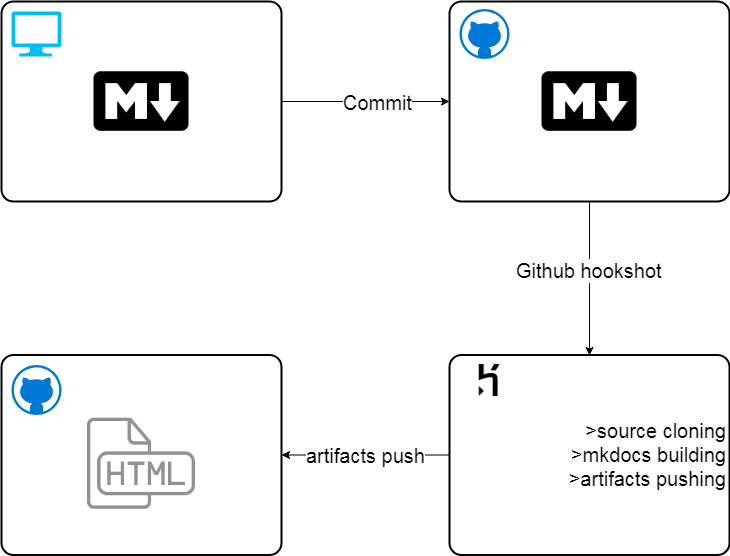

Continuous Integration
Continuous Integration is powered by a heroku app.
This app provides remote builds and commits into Github Pages repo. The whole workflow for any changes on this pages works like this:
- Technical writer edits source file at his local copy of the projects. At this step website can be built locally with the MkDocs command mkdocs build and viewed in browser at 127.0.0.1:8000.
- Technical writer commits and pushes his local changes to the source repo.
- Github automatically sends POST-request at the predetermined URL of a heroku build build app.
- Heroku app receives this requests and starts the process of mkdocs building:
- BuildApp clones docpage-source repo, install MkDocs and all of it's required dependencies (such as Material, Fenced code tabs, e.t.c).
- BuildApp starts mkdocs build to create html-output from markdown source files.
- BuildApp pushes all of MkDocs output into Github Pages Repo.
- After a while (from 30 seconds to several minutes) all the changes can be viewed at https://soo-underground.github.io.
Here's a rough scheme of the whole process: 